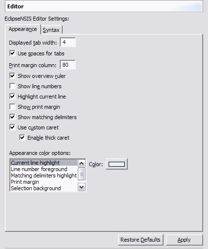

Preferences
Editor
These preferences are used to customize the look and feel of the
EclipseNSIS
editor.
The Editor Preferences page has two tabs:
Appearance

- Displayed tab width
- Specifies how wide tabs are displayed in units of spaces. ← Back
- Use spaces for tabs
- The editor uses spaces instead of tabs to represent indentations. ← Back
- Print margin column
- Specifies the column after which the print margin is displayed. ← Back
- Show overview ruler
- If enabled, the overview ruler on the right border of the EclipseNSIS editor is displayed and shows problems of the whole visible document. ← Back
- Show line numbers
- If enabled, the vertical ruler on the left border of the EclipseNSIS editor displays line numbers of the visible document. ← Back
- Highlight current line
- If enabled, the background of the current line of the cursor is highlighted. ← Back
- Show print margin
- If enabled, the print margin is displayed. ← Back
- Show matching delimiters
- If enabled, whenever the cursor is next to a parenthesis, bracket or curly braces, its opening or closing counter part is highlighted. ← Back
- Use custom caret
- Accessibility option to use a custom caret. ← Back
- Enable thick caret
- Accessibility option to use a thick caret. ← Back
- Appearance color options
- The colors of various EclipseNSIS editor appearance features are specified here. The available appearance features are listed below. ← Back
- Current line highlight
- The color of current line highlight.
- Line number foreground
- The color of line numbers.
- Matching delimiters
highlight
- The color of delimiters highlight.
- Print margin
- The color of the print margin.
- Selection background
- The background color of selected text.
- Selection foreground
- The foreground color of selected text.